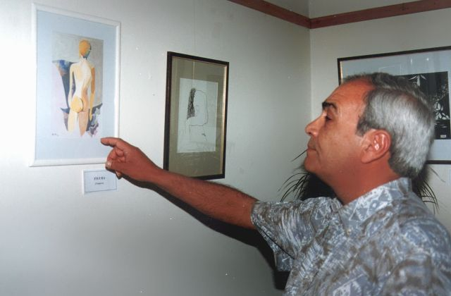

Próxima Muestra
Actualmente, no hay fechas de muestras o exposiciones programadas.
Consulta esta página regularmente para enterarte sobre nuevas fechas y eventos.
Cualquier novedad será publicada aquí mismo.

Actualmente, no hay fechas de muestras o exposiciones programadas.
Consulta esta página regularmente para enterarte sobre nuevas fechas y eventos.
Cualquier novedad será publicada aquí mismo.